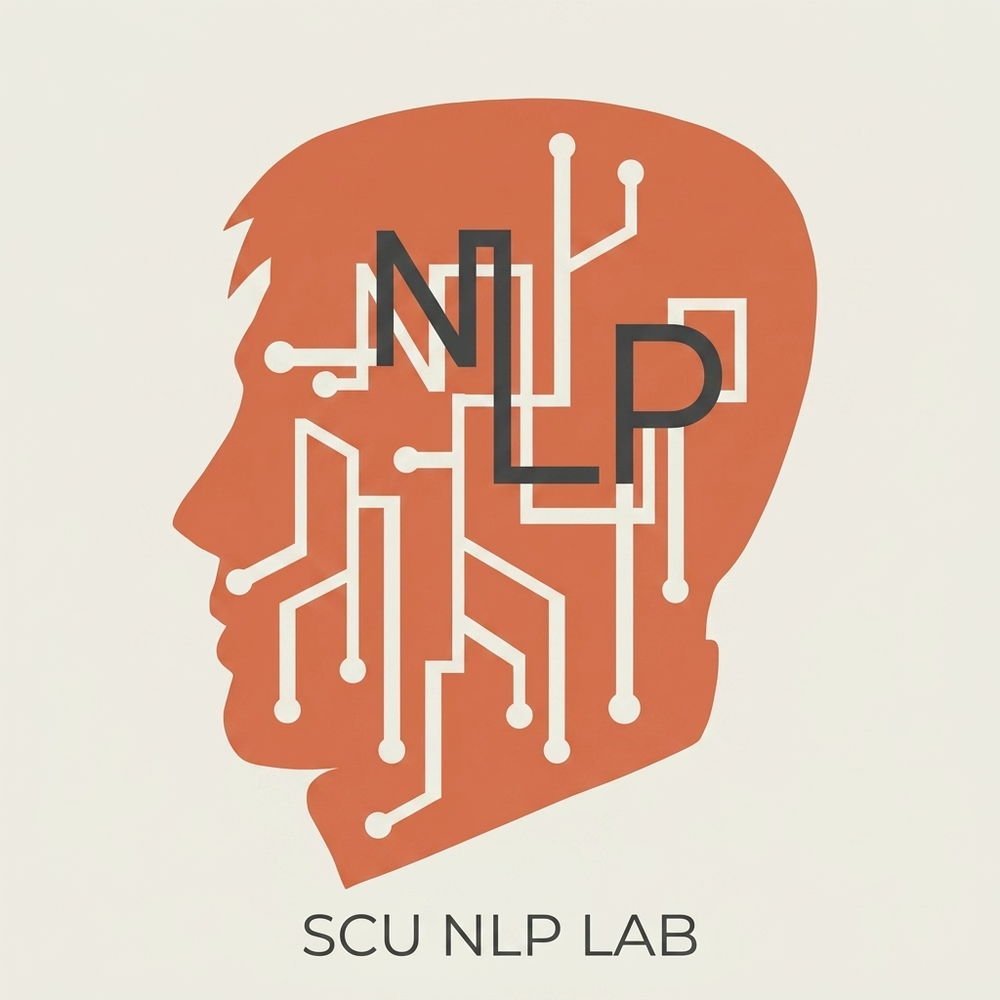

明天我們要用 Claude Code 從零開發一個你專屬的小工具。請在此填寫你的題目與構想！
在 Vibe Coding 的開發流程中，切忌一開始就寫宏偉複雜的大系統。建議構思一個能在 30 分鐘內用代碼寫完的小工具。快速跑通「設計、生成、測試、執行」的循環，所獲得的成就感與實用價值才是最高的。
我們會收集大家的點子，並在明天挑選合適的題目作為課堂實作範例或 Mini Hackathon 的選配挑戰。若真的想不到也不用擔心，講義後方也貼心準備了 6 個精選的備選題目供您直接選用。